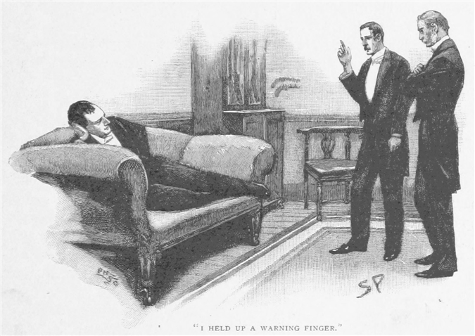
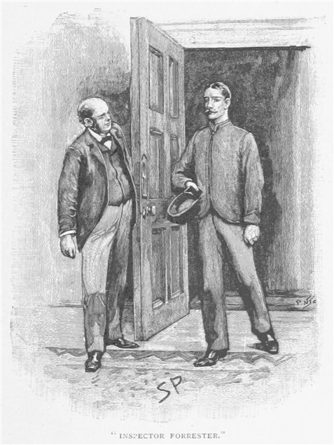
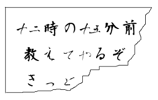
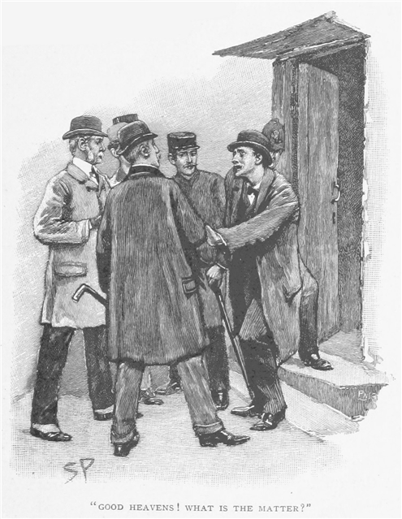
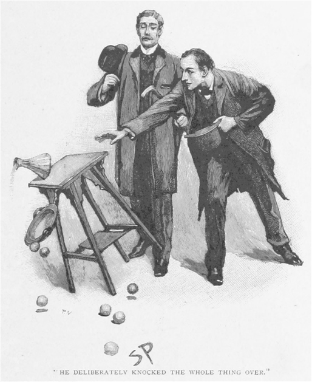
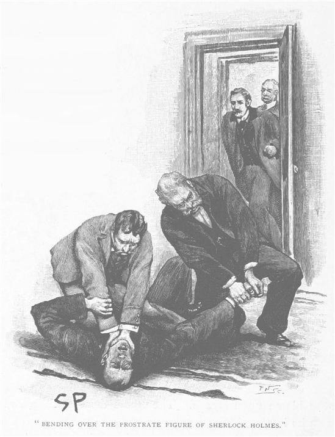
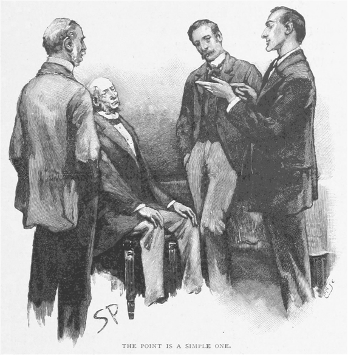
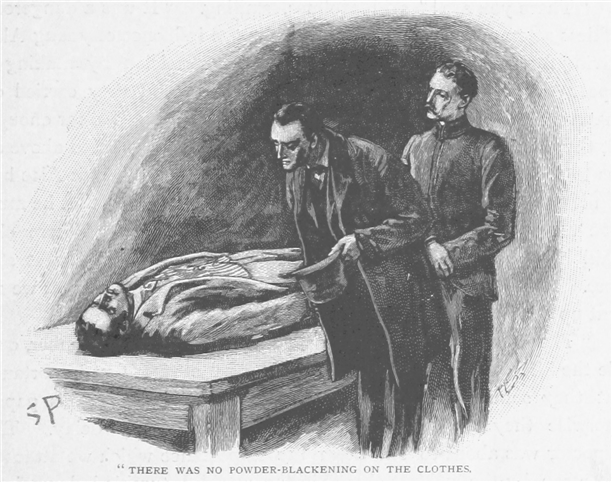
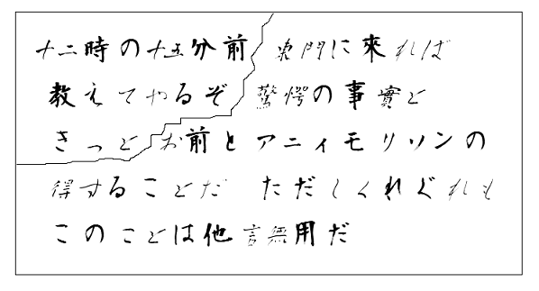

わが親友シャーロック・ホームズくんは八九年の春、過労のため神経症になったのだが、これはそこから健康を取り戻すより少し前の話である。蘭領スマトラ会社やモーペルチュイ男爵の大計画といった件のあらましは、今も世間の記憶にたいへん新しく、また政治や金融とあまりに密接な関係があるため、この連載の題材には適していない。ところがそれは間接的な形で複雑怪奇な問題へとつながり、犯罪との生涯の戦いで用いる多くの武器のうちでも、ある新しいものの価値を証明する機会をわが友に与えたのだった。
自分の覚え書きをたぐると、四月の一四日だったことがわかる。その日に私はリヨンから電報を受け取り、ホームズがオテル・デュロンというところで病に伏せっていると知らされた。一日もせず私は友人の病室へと行ったのだが、その症状に危ないところがないとわかってほっとしたのだった。にしても、その鉄の身体でさえもが二ヶ月にわたる捜査の重圧で参っており、その期間は一日の活動が十五時間を下ることが決してなく、当人の話では一度ならず五日間も立て続けに机にしがみついていたことまであったという。その成果がいかに誇らしくとも、それだけ過酷な努力のあとでは反動も避けられまい。欧州じゅうが友人の名に沸き、部屋じゅうが祝電で文字通り足が埋まってしまったときも、見ると友人は黒々とした憂鬱の餌食になっている。その知識にしたところで、三国の警察のしぐじったことも解決し、欧州一の腕を持つ詐欺師のあらゆる裏を掻いたと言えども、当人の神経衰弱を盛り返すには足りなかったのだ。
三日後にふたりしてベイカー街へ戻ったのだが、友人に転地療養させた方がなおよいのは明らかで、一週間でも春の田舎をとの考えが、私にもきわめて魅力的に思えてきた。私の旧友であるヘイタ大佐は、アフガニスタンで私の治療を受けた男なのだが、当時はサリィ州のライギット近くに館をあがなっており、訪ねてこないかとよく誘いを送ってくれた。最近の話では、友人もついてくるなら喜んで等しく歓迎すると言ってくれていた。いささかの説得が必要だったが、ホームズも向こうが独身であることと最大限の自由が許されることを理解して、ようやく私の企てに同意し、リヨンから帰って一週間後に我々は大佐の館に宿ることとなった。ヘイタは立派な老兵で、世の事々を知っていたので、期待通り自分とホームズに通じるところが多々あるとすぐに悟ったようだった。
着いた日の晩、我々は夕食後に大佐の銃器室で腰を落ち着けていた。ホームズはソファに身を投げ出し、ヘイタと私とは火器に着いた小さな徽章をながめていた。
「時に。」と出し抜けに大佐は切り出した。「この辺の拳銃を一丁、上の自室へ持ってった方が良さそうだ、危険を感じたときのためにな。」
「危険！」と私。
「そうとも。近頃ここいらの者はみなおびえておってな。アクトンのご老公はこの州の大物なんだが、先の月曜に家へ押し入られてな。被害はそれほどでもなかったのだが、一味はいまだに捕まらずじまいだ。」
「手がかりは何も？」とホームズが大佐に目を注ぐ。
「今もって何も。だがこんなものささいな事件、田舎の小さな犯罪といったもので、小さすぎてあなたの関心を引くまでもないもので、ホームズさん、例の国際的な大事件のあとではね。」
ホームズはこのお世辞に手を振ったが、その微笑みから喜んでいることが見て取れる。
「でも何か面白みはあるでしょう？」
「いやおそらく何も。泥棒どもは書斎を引っかき回したが、成果はほとんどなし。部屋中ひっくり返され、引き出しを開けられ、戸棚はかき回され、結果としてはポープ訳ホメロスの一方、めっきの燭台を二台、象牙の文鎮ひとつ、楢の小型気圧計に糸撚玉ひとつしか消えておらんかった。」
「なんと変わった取り合わせだ。」と私は声を張り上げる。
「ほう、どうも者ども、手当たり次第にひっつかんだようだ。」
ホームズはソファからつぶやくように言った。
「州警察は何か講ずるべきだ。まあ、はっきりしているのは――」
だが私は注意の指を差し向ける。

「休みに来てるんだ。いいかい、頼むから新しい問題に取りかかったりしないでくれ。君の神経はずたずたなんだから。」
ホームズは肩をすくめ、おどけた視線を投げて、大佐にあきらめたことを伝え、話はもっと危険の少ない方面へと流れていった。
ところが結局、私の医者としての注意など無駄に終わる羽目となった。というのも翌朝、その問題の方から我々に突っかかってきて、見て見ぬふりも出来なくなり、この田舎滞在はふたりの予期せぬ展開を見せたのだった。我々が朝食を摂っているときのこと、大佐の執事が礼儀も何もかなぐり捨てて駆け込んできた。
「もうご存じですか、旦那さま。」と息を切らし、「カニンガムさまのお宅が。」
「押し込みか！」と大佐がコーヒーカップを持ち上げたまま叫ぶ。
「人殺しです！」
大佐は口笛を吹く。「なんと！ で、誰がやられた？ 判事か、息子か？」
「いいえ、御者のウィリアムです。心臓を撃ち抜かれて、事切れて。」
「で、誰が撃った？」
「その夜盗がです。鉄砲玉みたく逃げて後には何も。食料庫の窓を破って入ったところをウィリアムが出くわして、命と引き替えに主人の財産を守ったわけです。」
「いつ頃だ？」
「ゆうべです。一二時あたりでしょうか。」
「そうか。ではあとで伺わんとな。」と大佐は言って、静かに食卓に着く。「よからん話だ。」と執事がはけたあとで大佐は言葉を続ける。「ここらでも指折りの名士でな、カニンガムのご老公は。きちんとした人物で、この件では相当の痛手だろう。その男は長年仕えた忠実な使用人だったのだ。きっとアクトンのところに押し入ったのと同じ悪党だな。」
「盗んだものが実に妙な取り合わせだった、あの。」とホームズは考え込む。
「まさしく。」
「ふむ！ これは世界一簡単な事件と言っていいですが、とはいえ一見したところではいささか妙なところもあるではないですか。由来、田舎で働く強盗団とは仕事場を転々とさせると相場が決まってまして、数日内に同じ地方で二軒も押し入らないものなのです。あなたが昨晩用心を口にしたとき、そういえばと頭によぎったのは、おそらくイングランドではこの教区がいちばん強盗もしくは強盗団の関心を得られそうにないということで――ですが今の話では、まだ学ぶべきことがたくさんありそうです。」
「土地勘のあるやつのようで。」と大佐。「となると、もちろんアクトンもカニンガムも狙った家というわけだ。ここらじゃ段違いの豪邸だからな。」
「財産の方も？」
「ああ、そのはずだ。もっとも両家はしばらく訴訟でもめとるから、互いに相当の血が流れておるようで、アクトンのご老公はカニンガムの地所の半分の権利とかを主張しておって、双方の弁護士が争っていてな。」
「土地勘のある悪党なら、
「フォレスタ警部がお見えです。」と執事が扉を開け放つ。

身だしなみのいい切れ者風の若い警官が部屋に立ち入った。「おはようございます、大佐。」とその人物は言う。「お邪魔でなければ、その、ベイカー街のホームズ先生がおられると聞いたのもので。」
大佐が友人の方へ手を振ると、その警官はお辞儀をした。
「きっとご参加くださる気になろうかと存じます、ホームズ先生。」
「運命の神は君に反対だとさ、ワトソン。」と友人は吹き出す。「入ってきたとき、ちょうどその事件の話をしていたところで、警部。きっと君なら、詳しい話を聞かせてくれるね。」
友人がいつもの体勢で椅子に寄りかかったので、状況は最悪だと私は悟った。
「アクトン事件の手がかりは何も。ですが今回はかなりよりどころがありまして。いずれの事件も同じ一味に違いありません。男が目撃されてます。」
「ほお！」
「そうなのです。つまりそいつは哀れなウィリアム・カーワンを一発で撃ち殺したあと、脱兎のごとく逃げたんですが、カニンガムさんが寝室の窓からその姿を見ておりまして、それにアレク・カニンガムくんも裏口から見たと。突然声がしたのが一二時の一五分前のこと。カニンガムさんは寝台に入ったばかりで、アレクくんは化粧着でパイプを吹かせていました。ふたりは御者のウィリアムが助けを求めるのを聞いて、で、アレクくんが何事かと駆け下りていきますと、裏口の戸が開いていて、階段の下に着くと外でふたりの男が取っ組み合いをしてるのが見えたとか。一方が一発撃つと、もう一方が倒れて、犯人は庭を抜けて生け垣を乗り越えて走り去ってしまって。カニンガムさんは寝室からそれを見ていたのですが、そいつが道に出たところまでで、すぐに見失ってしまいました。アレクくんは立ち止まって瀕死の男を助けられるか確かめてましたから、悪党も姿を消せたというわけで。ただ、そいつが中肉中背、暗色の何かを着ていたというのがわかるだけで、それ以上そいつの手がかりはありません。ですが我々は精力的に捜査を続けてますし、やつがよそ者ならまもなく見つけられるでしょう。」
「そのウィリアムとやらはそこで何を？ 死ぬ前には何も言わず？」
「一言も。母親とともに番小屋に住んでまして、実にまじめな男でしたから、見回りでもするつもりで母屋へ行ったのだろうと我々は踏んでいます。もちろん先のアクトンの一件でみんな用心してますからね。
「ウィリアムは出かけに母へ何も？」
「耳の遠い老婆ですから、情報は何も得られずで。今回の衝撃で茫然自失ですが、元から耄碌してるんだとは思います。しかし、ここにひとつたいへん大きな証拠が。ご覧ください！」
警部は手帳から小さな神の切れ端を出して、膝上に広げた。
「これが死体の指のあいだに見つかって。どうももっと大きな紙の切れ端のようで。ここに記された時刻と、哀れにも男が死に見舞われた時間とが一致することはおわかりでしょう。また下手人が彼の手から残りを破り取ったか、あるいは下手人からこの切れ端を彼が取ったか、のどちらかということも。これは何かの約束のように読めますね。」
ホームズはその紙切れを取り上げた。ここにそのまま再現しておく。

「これが何かの約束だと仮定すると、」と警部は続ける。「このウィリアム・カーワン、正直者という評判があるとはいえ、強盗団の一味であるかもしれないという見立てももちろんありえてきます。そこで待ち合わせ、戸を押し破る手助けまでして、そのあと仲間割れしたのかもしれません。」
「この文章、飛び抜けて面白い。」とホームズは気を集中させて紙切れを調べていた。「予想以上に険しそうだ。」と友人が頭を抱えると、警部は自分の事件がロンドンの有名探偵に響いたとにんまりする。
「今の話では、」とすぐにホームズは続ける。「強盗と使用人が通じ合っていて、これが渡された指示書かもしれぬとのことだが、独創的であながちありえない読みではないでしょう。しかしこの筆跡から見えてくるのは――」と友人は再び頭を抱え、そのまましばらく考え込んでしまった。そして頭を戻すや、私は見て驚いたのだが、その頬には色が差し、その目は病む前と同じくらい輝いていたのだった。以前の元気を取り戻して勢いよく立ち上がる。
「では、」と友人は言い出す。「いささかばかりこの事件を詳しく見させて頂きたい。ここにはきわめて惹かれるものがある。よろしければ、大佐、僕はワトソンくんとあなたに失礼して、この警部と回って、若干の思いつきをひとつふたつ正しいか確かめたいのですが。三〇分もあれば帰って参りますので。」
一時間半が経って、警部がひとりで戻ってきた。
「ホームズ先生は外の原っぱをあちこち歩いておられます。」というのが彼の話だ。「例の屋敷へ、四人一緒に出かけたいと。」
「カニンガムさんのところへか？」
「そうです。」
「何のために？」
警部は肩をすくめる。「それがさっぱりでして。ここだけの話、ホームズ先生はまださほどご病気が治っておられないのではと。本当に妙なことばかりなさって、ひどくご興奮を。」
「心配はご無用ですよ。」と私。「変ななりふりながらも筋が立っている、と私はいつも理解しております。」
「たいていの人は、そんなの筋が変だと言いますね。」と警部はつぶやく。「ところで先生は出かけたくてたまらないそうですから、大佐、整いましたら出るのが最善かと。」
外ではホームズが行ったり来たりしており、顎を引いて両手とも下に突っ込んでいた。
「この事件、面白くなってきた。」と友人。「ワトソン、君の田舎旅行も大成功だ。魅力的な朝だった。」
「犯行現場まで行ってきたそうだが。」と大佐が訊ねる。
「ええ、警部とふたりで。それなりの下調べを。」
「何か成果が？」
「そう、実に興味深いものをいくつか見てきました。具体的な話は道すがら。まず第一に、不幸な男の死体を見ました。確かに話通り撃ち殺されていました。」
「では、そのことを疑っていたので？」
「まあ、何事も調べるに越したことはありません。捜査の甲斐はありました。それからカニンガム氏とご子息にお会いして話を。そして逃げるときに犯人が壊したという庭の生け垣の正確な位置を教えてくれました。それがたいへん興味深い。」
「ごもっとも。」
「次に哀れな男の母親に面会しました。ですがこれといって得るものはなく。弱り切った老婆でしたので。」
「捜査結果はいかばかりで？」
「この犯罪が実に特異なものであると確信を。この訪問のおかげで、いくらか晴れてくれるだろうと思います。これはふたりのあいだでも一致していると思いますが、警部、死体の手にあった紙切れ、確かに死亡時刻が書かれているわけで、きわめて重要です。」
「きっと手がかりになるでしょう、ホームズ先生。」
「現に手がかりになっています。とにかくこの覚え書きを記した男が、その時刻にウィリアム・カーワンを寝台から引っ張り出したのです。だが紙の残りはどこにあるのか？」
「見つけられると思って地面を丹念に調べたんですが。」と警部は言った。
「それは死体の手から破り取られた。なぜその何者かはどうしてもそれを手にしたいと思ったのか。理由はそれが犯人を指し示すから。そしてそれをどうしたのか。懐に押し込んだ。おおよそのところ、死体に切れ端が握られたままなのを気づかずに。その紙の残りが手に入るなら、謎も解決へとかなり近づくことになるのは明らかです。」
「ええ、しかし犯人を捕まえないことには、その懐に手の突っ込みようもないでしょう？」
「ええまあ。そこが考えどころでした。まだもうひとつ明らかな点があります。あの覚え書きはウィリアム宛だったこと、書いた当人が持ってきたのではないこと。むろんそうでなければ口頭で話を伝えたはずです。仲介役は誰か？ それとも郵便で来たのか？」
「私も調べてみました。」と警部。「ウィリアムは昨日の午後配達で手紙を受け取ってます。封筒が彼の手で破られてました。」
「素晴らしい！」とホームズは声を上げて、警部の背を叩く。「君は郵便屋を見つけた。一緒に仕事できて嬉しいよ。さて、ここが例の番小屋、大佐、いらっしゃれば犯行現場をお見せしますよ。」
我々は被害者の住んでいたこじんまりした小屋を過ぎて、楢の並木道を抜けていくと、アン女王様式の古い立派な屋敷に至った。その扉の上にはマルプラケの戦いの日付が記されてあった。ホームズと警部の先導で我々はぐるりと横門へと回った。そこから庭が広がり、道に面したところには生け垣がある。ひとりの巡査が台所の勝手口に立っていた。
「開け放しにしてもらえないかな、君。」とホームズ。「さて、その階段のところこそ、カニンガムくんが立った場所で、今我々のいるところであったふたりの男の格闘を見たわけです。カニンガムのご主人は窓際――左から二番目にいて――男がそのやぶの左手へ逃げ去ったところを見た。ご子息も同様で、ふたりの説明は一致しています。それからアレクくんは飛び出して、被害者のわきにひざまづいた。地面はたいへん硬く、ご覧の通りたどれる跡もありません。」と話をしていると、ふたりの男が屋敷の角を曲がって庭の小道をやってくる。ひとりは老人で、皺々の険しい顔にどんよりした目、もうひとりは威勢のいい若者で、晴れやかにこやかな顔に派手な服は、我々を呼んだ出来事に比べると妙な感じがした。
「まだやってんの？」と若者はホームズに言う。「ロンドンの方は迷いがないものと思ってたな。君はあんまりきびきびしてないんだね、どうも。」
「まあ、少しは時間をいただかなくては。」ホームズは愛想よく答える。
「だろうね。」とアレク・カニンガム青年は言う。「でも手がかりがまったくなさそうだな。」
「ひとつだけあります。」と警部が割り込む。「思うに、見つけさえすれば――おや、ホームズ先生！ どうしました？」

気の毒にも友人の顔に突如としてきわめて恐ろしいものが浮かんだ。目を引んむき、苦悶の表情をして喉を絞りながら、顔から地面に倒れ込んでしまった。この唐突で激しい卒倒に、あわてて我々は友人を台所へと運ぶと、大きな椅子にもたれかかって友人はしばらく荒い息を続ける。やがてばつが悪そうに詫びながら、友人は再び立ち上がる。
「ワトソンが説明してくれようが、僕はまだ病み上がりで。」と友人の言い訳。「とかくいきなり神経の発作を起こすのです。」
「うちの馬車でお宅までお送り致しましょうか。」とカニンガム老人が言った。
「まあ、せっかくですから、ひとつはっきりさせておきたい点が。ごく簡単に確かめられますので。」
「何ですかな？」
「その、僕の考えでは、その気の毒なウィリアムという男が来たのは、強盗が屋敷に入る前でなくあとだというのも、まあありうるのではないかと。思いこみです、戸が破られているのに強盗が入ってないなど。」
「それは確かにそうだ。」とカニンガム氏は深刻そうに言う。「なに、せがれのアレクがまだ寝についとらんで、確かに何者かの物音を聞いたとか。」
「そのときの居場所は？」
「化粧室で煙草を。」
「どの窓です？」
「左端、父の隣で。」
「灯りはおふたりともつけておいでですね？」
「そりゃそうです。」
「ここが実に妙なところです。」とホームズはにやりとする。「まったく変どころか、強盗が――それもそれなりの経験を積んだ強盗が――家人がふたりまだ起きていることを灯りで知りながら、わざわざそのときに屋敷へ侵入するのですよ？」
「よほどの図々しいやつだな。」
「そりゃおかしな事件でなけりゃわざわざみなさんに解明を頼んだりしないさ。」とアレク青年。「でもあんたの、ウィリアムが飛びつく前に賊が屋敷を物色したって考えは、ばかげた思いつきだと思うぜ。どこか荒らされたとか、物が盗られてなくなったとか、そういうのはないんだろう？」
「盗まれた物次第なのです。」とホームズ。「忘れないでください、我々の扱っている強盗は一風変わった男で、独特のやり口で仕事をしています。たとえばアクトン家から盗った妙な品を考えれば――何でしたか？――糸玉、文鎮、あと残りは様々、思い出せませんが。」
「まあみな任せとるんですから、ホームズさん。」とカニンガム老人。「あんたや警部の言うこたあ何でもちゃんとさせます。」
「ではまず、」とホームズが言い出す。「懸賞金を出して頂きたい――あなた自身の手で。役所では額を決めるのに若干暇がかかりますから、物事が迅速に進まないのです。ここに書式をざっとこしらえておきましたから、よろしければ署名だけでも。五〇ポンドが適当かと。」
「五〇〇ポンドだろうと喜んで。」と判事は用紙と鉛筆をホームズから手渡しで受け取ったものの、「とはいえ、あまり正確ではないですな。」と書類に目を通しながら付け加える。
「あわててこしらえたもので。」
「ほれ、書き出しが『事実としては、火曜一時の一五分前頃に侵入がなされ』云々。だが実際は一二時の一五分前でしたな。」
その間違いに私は心を痛めた。この種の失敗をホームズが強く気にすると知っていたからだ。事実に関して正確たるのが本分であるのに、この頃の病気で揺らいでおり、このささいな出来事からも、友人は本調子からまだほど遠いことがじゅうぶんわかる。しばし困惑していることがありありと感じられ、警部も眉をつり上げ、アレク・カニンガムときたら笑い出す始末。しかし老紳士は誤りを訂正しただけで、ホームズに用紙を返す。
「大至急こいつを刷りなされ。」と老人。「あなたの考えは素晴らしいですな。」
ホームズはその用紙を注意深く手帳にしまい込む。
「では、ここでこうしてみたらいがかですかな。みんなして屋敷に入って、その妙ちきりんな盗人が果たして何も持ち出さなかったのか、確かめるというのは。」
入る前に、ホームズは破られたという戸を調べてみた。ノミなり硬い刃物なりが差し込まれて錠がこじ開けられていた。押し込まれたところの木に痕が見て取れる。
「閂はお使いにならない？」と友人。
「必要を感じませんでな。」
「犬はお飼いにならない？」
「いえ、表につなげてあります。」
「使用人が寝に退がるのは何時です？」
「およそ一〇時で。」
「ウィリアムも平生その時刻に寝付くと考えても？」
「結構。」
「妙なのはこの夜に限って起きていたらしいことです。時に、よろしければ屋敷内を案内して頂けるとありがたいのですが、カニンガムさん。」
石敷きの通路は台所に続く道と、屋敷の二階へと直接行ける木の階段とに分かれていた。そこを上がった踊り場は、正面玄関から上がれる飾り立てられたもうひとつの階段の反対側に当たる。この踊り場から応接間と寝室数室に通じていて、カニンガム親子の部屋もそこに含まれていた。ホームズはゆっくりと歩きながら、屋敷の構造に鋭い注意を向けていた。その表情を察するに、友人は強いにおいをかぎ取っているのだろう。だがその推理がどの方角を向いているのか、私には思いもよらなかった。
「申し訳ない。」とカニンガム氏が我慢できずに口を差し挟む。「差し出がましいが、この階段の上がったところにあるのがわしの部屋で、その向こうがせがれので。盗人がわしらに気づかれぬようここまで上がってこれたかどうかは、あなたの判断に任せましょう。」
「せいぜい歩き回って、新しいにおいでも見つけてみたらいいんじゃないの。」と息子の方はむしろ意地悪そうににやりとする。
「そのためにも、もう少し付き合って頂きます。たとえば、寝室の窓から表がどれほど見通せるのか知りたい。ここはご子息の部屋ですね。」――と扉を押し開けて――「あれが、察するに、物音がしたときご子息が座って吹かしていたという化粧室、でこの窓からは何が一望できますか？」寝室を通り抜け、扉を押し開け、もうひとつの部屋をのぞき回す。
「そろそろ満足ですかな？」とカニンガム氏のきつい口ぶり。
「どうも。望んだものは残らず拝見できたかと。」
「では、どうしても必要なら、わしの部屋にも
「お差し支えなければ。」
判事は肩をそびやかしつつ自室へ案内したが、そこは家具も地味なごく普通の部屋だった。我々が窓の方へ歩いているうちにホームズは後ろに下がって、とうとうふたりで最後尾になってしまった。寝台の足近く、台に載った一皿のオレンジとガラスの水差しがあった。そのそばを通ったとき、私は唖然としたのだが、ホームズが私の前に身を乗り出してわざとつっかかり、全部をひっくり返してしまった。ガラスが粉々に砕け、果物は部屋の隅々へ転がっていく。

「君の仕業か、ワトソン。」と冷ややかな言葉。「絨毯がめちゃめちゃだ。」
私は戸惑って棒立ちになっていたが、やがて果物を拾い始めた。友人が私のせいにしたのも何か裏があるのだと思ったからだ。他の者もそれに続き、倒れた台も立て直される。
「おや！」と警部が声を出す。「先生はいずこに？」
ホームズの姿がなかった。
「ちょっと待てよ。」とアレク・カニンガム青年が言った。「あいつ頭がおかしいんじゃないのか。一緒に来いよ、親父、どこ行ったか探すんだ。」
ふたりは部屋を飛び出していったので、置き去りにされた警部と大佐と私は、互いに顔を見合わせた。
「自分も、アレク坊ちゃんと同じような気がします。」と警部。「ご病気のせいもありましょうが、私には――」
と言い切らないうちに、突如叫び声が。「出会え、出会え！ 一大事だ！」その声が友人のものだと気づいて、私は戦慄した。我を忘れて部屋から踊り場の方へ駆けてゆく。その叫びは低いうめき声へと変わったが、その元は我々が初めに入った部屋からだとわかった。私は飛び込むや奥の化粧室へと躍り込んだ。するとカニンガム親子が床に倒れたシャーロック・ホームズの身体の上から覆い被さっていて、青年が両手でその喉を絞め、老人がその手首をねじ曲げていた。すぐさま我々三名が友人からそやつらを引き離すと、ホームズはふらふらと立ち上がった。その顔は真っ青で、目に見えて疲れ切っている。

「この者たちの逮捕を、警部。」と声を絞り出す。
「何の罪で？」
「当家の御者ウィリアム・カーワン殺害の件で。」
警部は当惑のていで友人を見つめる。「そんな、まさか、ホームズ先生。」というのがやっとの言葉で、「本気じゃないでしょう、そんな――」
「ふん、君、その顔を見たまえ。」とホームズは言い捨てる。
人間の顔がこんなにありありと自白するところは、私も見たことがなかった。老人はじっとして心ここにあらずといった感じで、険しい顔には重苦しげな表情が浮かんでいた。かたや息子の方はあの目立つ威勢もどこへやらで、危険な野獣の獰猛さが黒い目のうちに光り、整った容貌もゆがんでいた。警部は何も言わずに扉の方へと歩み寄り、呼子を吹いた。ふたりの巡査が応じてやってくる。
「やむを得ません、カニンガムさん。」と警部。「とんでもない間違いとわかるのを信じてますが、おわかりいただ――な、何を？ おろせ！」警部が手ではたくと、引き金の引かれようとしていたリヴォルヴァが、青年の元から床にがちゃりと落ちる。
「保管を。」とホームズが素早く足で踏みつける。「きっと裁判で役に立つだろう。だが本当に欲しいのはこれだ。」友人はややしわになった一枚の紙切れを掲げる。
「例の残りですね！」と警部は声を張り上げる。
「いかにも。」
「それをどこで？」
「あるはずと踏んだところで。すぐに全容を明らかにしよう。思うに大佐、あなたとワトソンはとりあえずお帰りを。僕も遅くとも一時間後には戻ります。警部と僕はこの犯人どもと少々話をせねばなりませんが、きっとお昼時にはまたお目に。」
シャーロック・ホームズは約束通り、一時頃に大佐の喫煙室にて我々と合流した。初老の紳士を同伴しており、その人物は紹介によると、最初の強盗現場となった屋敷の持ち主アクトン氏だという。
「このささいな事件の解明に、アクトンさんも立ち会って頂きたく。」とホームズ。「当然この方も仔細に強い関心がおありでしょうから。すいません大佐、僕のような疫病神に時間を取られてご迷惑かと。」
「それどころか。」と大佐は興奮のていだ。「この上ない名誉に思う。あなたの仕事ぶりの見学を許されるなんて。正直のところ、私の予想をはるかに超えるもので、あなたの結論についてもまったく何と言ってよいか。」
「これからの説明で幻滅されるのではと心配ですが、その手際の包み隠さぬことを常に旨としております。友人のワトソンにも、知的興味を持つ誰に対してもです。ですがまず、化粧室でやられたことでまだいささかくらくらしてますので、ブランデイの力を一口お借りできればと、大佐。近頃は体力が消耗してまして。」
「ああいう神経の発作はそれきりであればいいが。」
するとシャーロック・ホームズはめいっぱい笑う。「そのことはおいおいと。」と言って、「では事件の説明を順々にお見せしましょう、結論に至った様々な点も示しつつ。推理にはっきりしないところがありましたら、どうぞ口を出してください。
探偵術に最重要なのは、数ある事実から周辺のものと本質とを見極める能力です。でなくては、力と気は集中せず散漫にならざるを得ません。さて、この事件では初めから僕の頭のなかに迷いはわずかばかりもありませんでした。事件全体の鍵は、死者の手にある紙切れのなかに求めねばならぬと。本題へ入る前に注意を向けて頂きたいのは、アレク・カニンガムの話が正しく、襲撃者がウィリアム・カーワンを撃ったあと〈すぐさま〉逃げたのなら、使者の手から紙を破り取ったのはどう考えてもその人物でないことになります。ですがその人物でないとしたら、アレク・カニンガムに相違ありません。老人が下りてきたときには使用人が数名、現場に居合わせてましたから。この点は単純ですが、警部は見落としを。州の名士はこの件に関係ないという頭があったためです。ところで僕は、自分の旨として、いかなる思いこみもせず、事実がどこに至ろうと素直についてゆくことにしています。そこで捜査の最初の段階からアレク・カニンガムの関与をやや疑っていた次第なのです。

それから僕は、警部の示してくれた紙切れをつぶさに調べてみました。すぐにはっきりしたのが、これがたいへん珍しい文書の一部だということです。これ、いかにも裏がありそうに思えませんか？」
「字面がやけにいびつだな。」と大佐。
「さよう。」とホームズが声を張る。「これがふたりの人物によって二字ずつ交互に書かれたこと、それはまずもって間違いありません。この『時の』や『分前』の撥ね払いが力強いのに対して、『十二』や『十五』の弱々しさ、このことはすぐご納得頂けますね。これらの字のごく簡単な分析から、あなたにも最大限確信を持ってわかるはずです。この『教え』と『るぞ』が強い筆跡によるもので、この『てや』は弱いと。」
「なるほど、火を見るより明らかだ！」と大佐は声を上げる。「いったい何のために、ふたりの男はそんなやり方で一通したためたんだ？」
「むろん用件がよからぬことだから、そして相棒を信用しない片割れが、何をするにもそれぞれ等しく分けるべきだと強く考えていたからです。さて、そのふたりのうち、『時の』や『分前』を書いた方が首謀者なのは明らかです。」
「どうしてそうなる？」
「両名の筆跡の特徴を比べるだけで引き出せましょう。裏付けとしては、それより確かな根拠もあります。この紙切れを注意してお調べになれば、強い筆跡の方が先に書かれ、もう一方が埋められるよう間を空けた、という結論にたどり着けるでしょう。ですがその間がみなじゅうぶんとは言い難いため、ご覧ください、あとの男が『時の』と『分前』のあいだに『十五』を押し込んでいます。つまりこのふたつは先に書かれたということ。先に書いた男こそ、疑いなく本件を思いついた人物です。」
「素晴らしい！」とアクトン氏が声を張る。
「まだ序の口です。」とホームズ。「核心に向かうのはこれからなのです。みなさんはご存じないかもしれませんが、筆跡から人物の年齢を割り出すのは、専門家ならかなり正確に行えます。通常、それなりの精度で人を正しい年代に置けまして、もっとも通常というのは、病気や体調不良の場合はその人物が若くとも老年の手振りそっくりになるからで。この件では、一方は太く強い筆跡で、もう一方は傾き加減の字面、しかもやや崩しているのにそれでも読みやすい。これを見るに、前者は若者で、後者は年寄りだがそれほど老いぼれてもいない人物と言えましょう。」
「素晴らしい！」アクトン氏は再び声を張る。
「ところがより繊細でさらに惹かれる点がもうひとつあります。これらの筆跡には、共通するところがあるのです。つまりふたりは血縁にあるということです。この古風な字がみなさんにもわかりやすいと思いますが、僕には同様の細かい点が多々わかります。一家の癖がこの筆跡標本からたどれることは疑いようもありません。もちろん今みなさんに話しているのは、この紙を調べた結果の主な点だけです。みなさんよりも専門家の興味を惹きそうな演繹が他にも二〇と三あります。こうしたことから、カニンガム親子がこの手紙を書いたという印象が、僕の頭のなかで深まることになったのです。

ここまで来れば、次の行動はむろん、犯罪の仔細を調べること、そして今のことがどれだけ役立つのか確かめることです。警部とともに屋敷へ出向き、見るべきものをすべて見ました。死者の傷は絶対の自信をもって断言できますが、四ヤードは離れて撃たれたものです。衣服に火薬の焦げはありません。よって明らかに、アレク・カニンガムは嘘をついています。ふたりがもみ合いのさなかに撃たれたというあの発言です。さらに、親子の発言は男が道に逃げた地点でも一致してました。しかしその地点には、あいにく底のぬかるんだ広めの側溝がありました。その溝のあたりに靴の跡らしきものがないことから確信できます、カニンガム親子はまたも嘘をついたばかりか、現場に謎の男などひとりもいなかったのです。
となれば、この妙な犯罪の動機を考えねばなりません。これに迫るため僕がまず解決しようとしたのが、先のアクトン氏のお宅への押し込みの理由です。大佐の話してくれたことから、こちらのアクトンさんとカニンガム家のあいだで裁判沙汰が続いていることは知っていました。むろんすぐに浮かんだのが、書斎に侵入して、訴訟で大事になりそうな書類でも盗るつもりだったのか、ということです。」
「いかにも。」とアクトン氏の発言。「そのつもりだったのは、疑う余地もない。向こうの現地所の半分について、わしには明白な請求権がある。もしやつらが一枚しかない書類を見つけようものなら――幸い弁護士の金庫に入っておったが――やつらはわしの訴訟を台無しにしたに違いない。」
「でしょうね。」とホームズはにやりとする。「これは危険で向こう見ずな企みでしたが、僕はここにもアレク青年の影がちらついていると思います。何も見つからなかったため、ただの強盗に見せかけて疑いを逸らそうとしました。だからこそ手当たり次第に持って行ったのです。以上のことはじゅうぶん明白ですが、いまだぼんやりとしたところも多々あります。何よりも僕が手に入れたかったのが、この覚え書きの失われた部分です。確かなのは、アレクが死者の手から引きちぎったことで、その化粧着の懐にねじ込んだと見てほぼ間違いないでしょう。そこ以外のどこに隠せましょう？ 残る問題は、まだそのなかにあるのかどうか。見つけようと骨折っただけの価値はありますし、その目的のために僕らはみんなして屋敷へ出向いたのです。
カニンガム親子が合流したところは、思い出してください、勝手口の外でしたね。むろん一番大事なのは、この紙の存在を思い出させないこと、気づかれたら最後、きっと即座に処分されましょう。そして僕らがそれを重要視していると警部がばらしそうになったまさにそのとき、世界一幸運なことに、僕が発作のたぐいでその場に倒れ、そして話が逸れたのです。」
「なんと！」と大佐は笑いながら声を上げる。「我らの心配も徒労で、あの発作も嘘だと言うのだな？」
「医者の身からしても、あっぱれな出来だよ。」と私はこの男を驚きの面持ちで見つめる。その立ち回りの早さでいつも煙に巻かれているのだ。
「それはしばしば功を奏するやり方で。」と友人。「それから元に戻すと、僕は何とか手を使って、それなりに巧みだったと思うのですが、カニンガム老人に『十二』という言葉を書かせて、そこでこの紙の『十二』と比べてみたというわけです。」
「私はなんて馬鹿者だ！」と私。
「君が僕の不調を気遣ってくれたのはわかった。そうと知りながら君の心を痛めさせてしまって申し訳ない。それから全員で階段を昇り、部屋に入って、扉の裏にかけてあった化粧着を見ましたので、台をひっくり返してしばらくどうにか注意を引きつけておいて、僕はこっそり戻り、懐を探りました。ですがつかんだその瞬間――予想通り懐の片方にありはしたのですが――いきなりカニンガム親子が僕につかみかかってきて、もしかするとその場で僕は殺されていたかもしれませんね、その素早い友の手がなかったとすれば。実際、今でもあの青年の喉を絞める手を感じますし、あの親は紙を僕の手から奪おうと僕の手首をねじったのですから、ふたりは僕に見破られたと悟っていたようで。絶対安全から絶望暗黒へと突き落とされたのだから、完全にやけになったわけです。
あとでカニンガム老人と犯罪の動機について少し話をしました。老人は流されやすい人物だが、息子はまったく悪の権化で、拳銃でもあれば自分含め誰彼構わずいつでも頭をぶち抜きかねません。カニンガムは自分の立場がきわめて不利なのに気づくと、魂がすっかり抜けてしまい、何もかも白状しました。どうもウィリアムはひそかに主人ふたりをあの夜つけたようなのです。アクトンさんのお宅に押し入ったあの夜のことです。それでばらすぞと脅し、ふたりを転がして金をせしめようとしました。ですがアレクくんは取り扱い注意の危ない男です。彼の才の突出したところは、この田園を揺るがす強盗騒ぎについて、脅威となる男を排除する絶好の機会だと見たところです。ウィリアムはおびき寄せられ撃たれ、もしこの覚え書きをまるまる持ち去って、周囲のことにもう少し細かく気を配っていたなら、疑いがまったく起きないということもかなりありえたと思います。」
「で、当の覚え書きは？」と私は聞いた。
シャーロック・ホームズは我々の前につなぎ合わせた紙を置く。

「想像していた通りのものだった。」と友人。「むろん、アレク・カニンガム、ウィリアム・カーワン、アニィ・モリソンのあいだにどんな関係があったのか、僕らにはまだわかりません。結果が物語るのは、罠はうまくかかったということです。必ずやみなさんもご納得されましょうが、この『こ』や『た』にも遺伝のあとが見られます。老人の筆跡に穴あきが多いこともかなり特徴的です。ワトソン、思うに僕たちの静かな田舎旅行もめざましい成功を遂げた。明日は大いに元気をつけて、きっとベイカー街へ戻れるはずだ。」